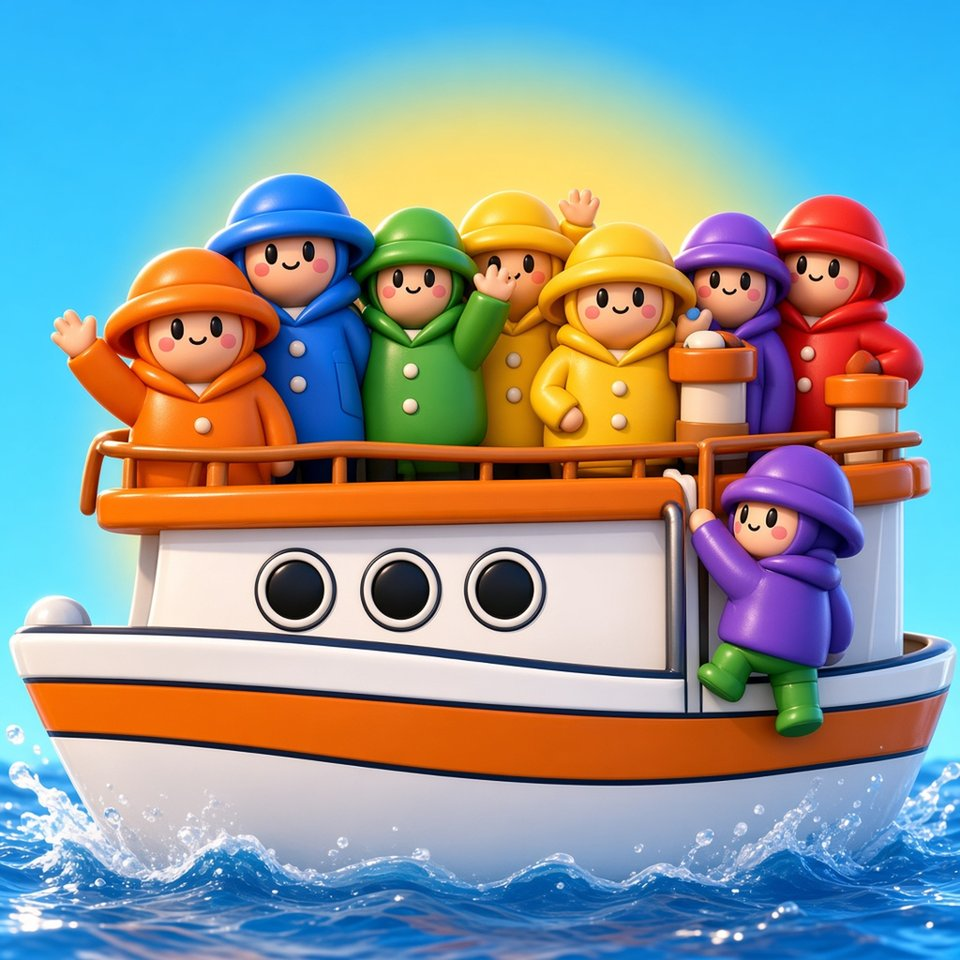
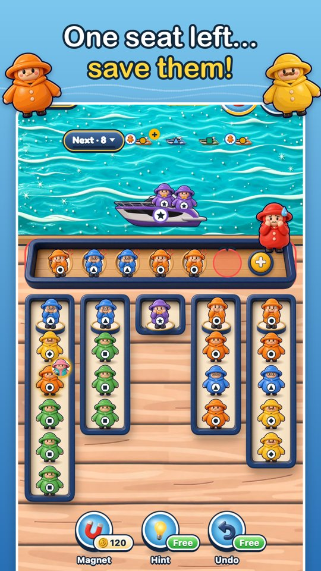
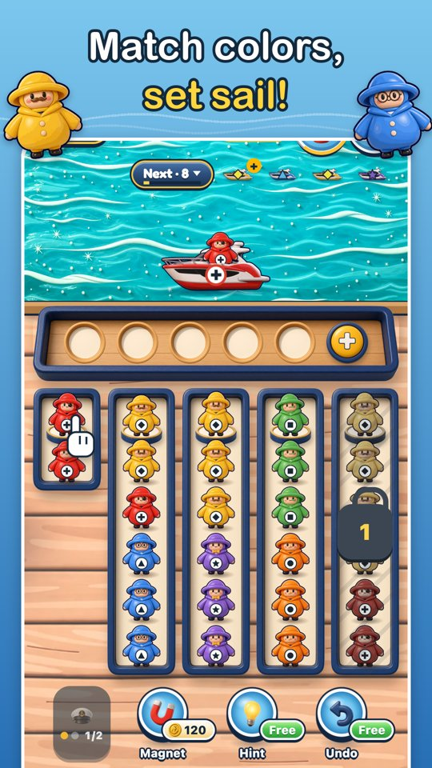
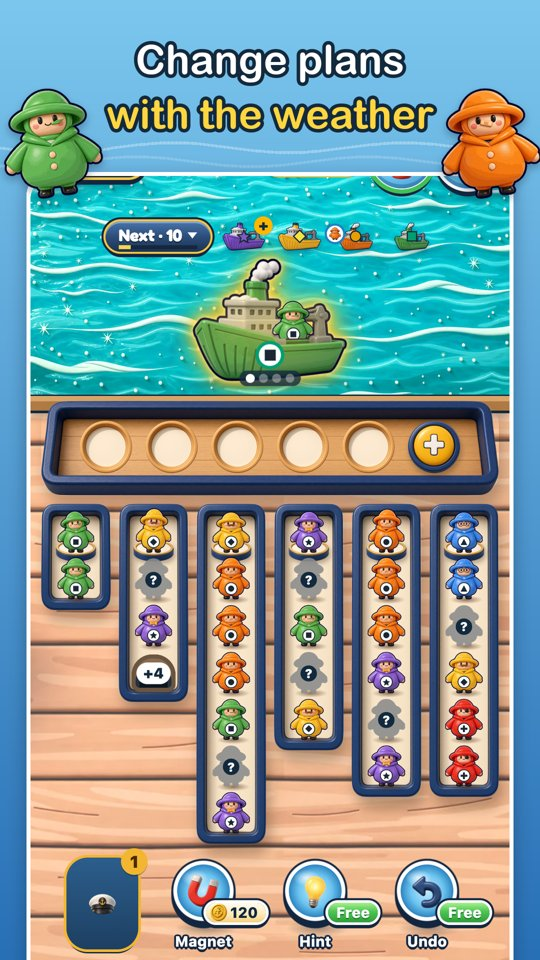
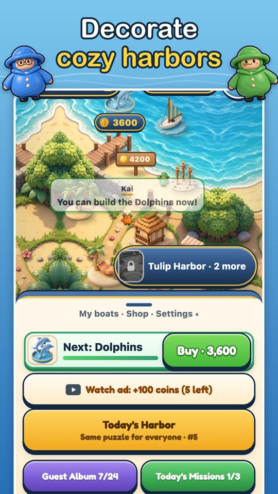

Dock Ferry: Color Sort Puzzle
A cozy color sort puzzle: tap riders onto the boat of their color, with only five bench seats to spare.

A cozy color sort puzzle: tap riders onto the boat of their color, with only five bench seats to spare.
Tap the rider at the front of a line and they hop onto the boat of the same color. Wrong color? They sit on a bench with only five seats, so every tap is a small plan. Fill a boat and it sets sail; the next one pulls in.
Every level adds sea weather such as Golden Boats, Fish Schools, Tailwind or Fog. Lose a level and you retry a fresh layout instead of the exact same board. Between levels you decorate harbors and collect a sticker album of harbor guests, with Winter Harbor arriving on November 20.
A one-person studio in Seoul making small, friendly puzzle games. Dock Ferry is its first game.




Screenshots, logos, gameplay clips and key art: woosuk547.github.io/dock-ferry/press · Review codes and TestFlight builds on request.